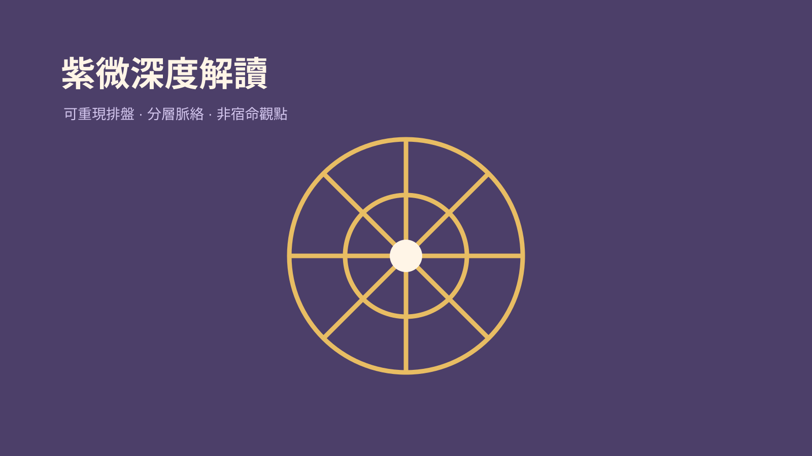

技能包 · 專屬顧問 · Web應用
紫微深度解讀顧問
2026.08 · 個人專案

FIG. 22 — 產品主畫面
關於這個作品
紫微深度解讀顧問以 iztro 排盤資料作為唯一盤面事實，結合第二大腦的星曜知識卡，從本命、大限到流年分層回應問題。它強調具體脈絡與可行動的理解，而不是把命盤說成不可改變的結論。
作品亮點
以 iztro 資料驗證命盤與星曜配置
檢索第二大腦卡片補足星曜脈絡
分層處理本命、大限與流年問題
以具體、非宿命的方式提出解讀與反思